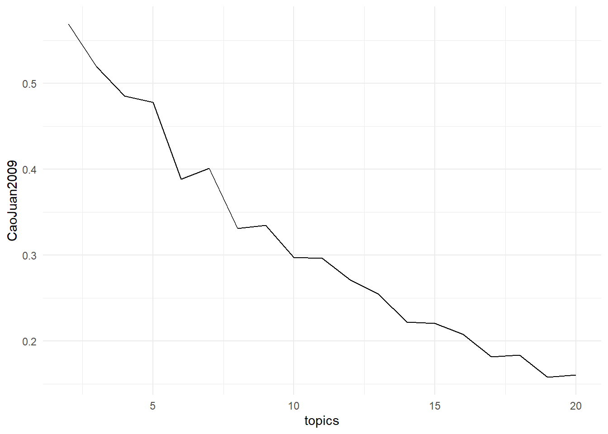
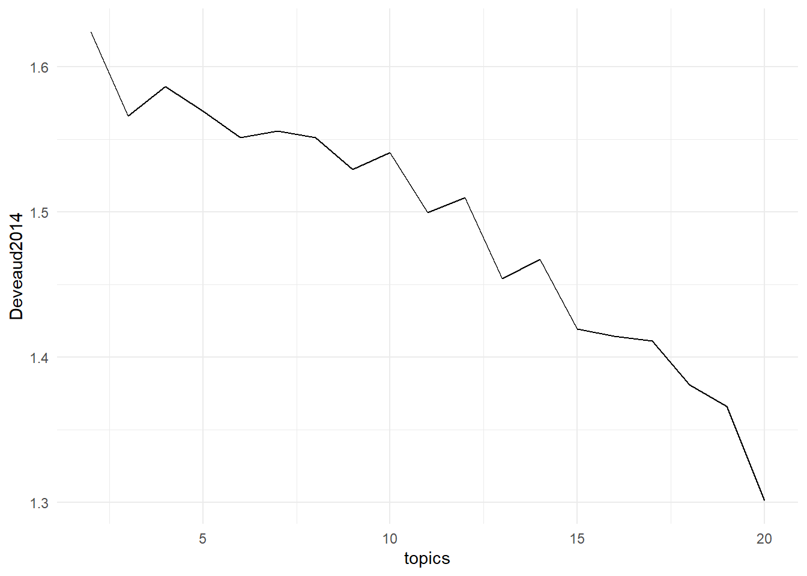
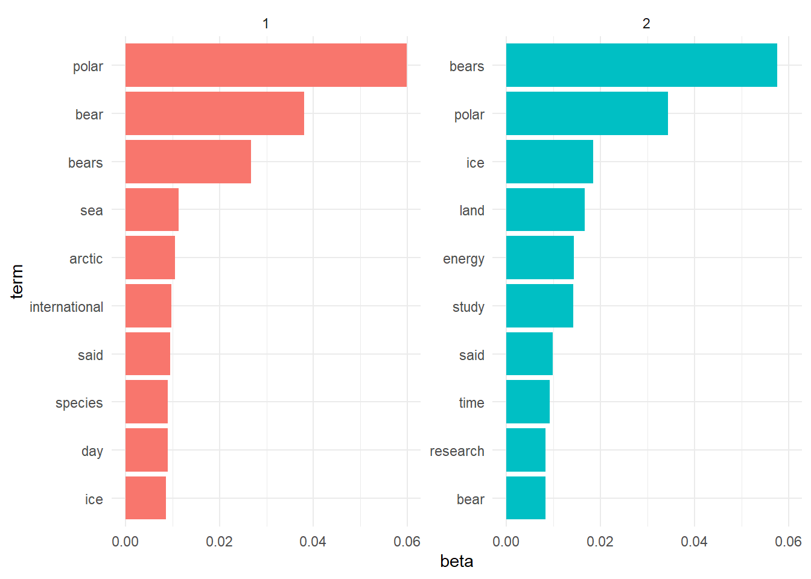

# Change data_list into table for analysis, extract metadata
data_table <- data_list@meta
# Create a tibble with date, headline, id, and article
data_tibble <- tibble(Date = data_table$Date,
Headline = data_table$Headline,
id = data_list@articles$ID,
text = data_list@articles$Article)
# Clean the dataset
data_tibble <- data_tibble %>%
# Remove all URLs and dates from the text
mutate(text = str_remove_all(text, paste("http[s]?://(?:[a-zA-Z]|[0-9]|[$-_@.&+]",
"|[!*\\(\\),]|(?:%[0-9a-fA-F][0-9a-fA-F]))+")),
text = str_remove_all(text, "\\b\\d{1,2}/\\d{1,2}/\\d{4}\\b"),
# Remove words with this pattern: February 14th, 2024
text = str_remove_all(text, paste0("\\b\\w+\\s\\d{1,2}[a-z]{2},\\s\\d{4}\\s\\",
"(\\s\\w+\\s—\\sDelivered\\sby\\sNewstex\\s\\)")))
# Remove duplicates in the text if they have the same words in the first 20 words
data_tibble <- data_tibble %>% distinct(Headline, .keep_all = TRUE)
# Calculate the distance between duplicates and remove the duplicates
data_tibble <- data_tibble %>%
mutate(dist = stringdist::stringdist(text, lag(text), method = "jaccard")) %>%
filter(dist < 0.5 | is.na(dist)) %>% select(-dist) %>%
# Make all text lowercase
mutate(text = tolower(text))Identifying the most common word in articles on climate science
NLP
R
In today’s era of burgeoning information, understanding the predominant themes and trends in vast volumes of text data is crucial for extracting meaningful insights. This project focuses on leveraging Natural Language Processing (NLP) techniques to analyze a collection of articles centered on climate science. By employing advanced computational methods, we aim to uncover the most prevalent topics discussed across these articles, shedding light on key issues and their interconnectedness within the domain of climate science.
Objectives 1. Data Collection and Preparation Data Retrieval: Obtain a comprehensive dataset comprising articles related to climate science, sourced from diverse publications. Data Cleaning: Standardize and preprocess the text data to remove noise, such as URLs, dates, and duplicates, ensuring a clean corpus for analysis. 2. Topic Modeling and Optimization Topic Extraction: Apply Latent Dirichlet Allocation (LDA) to identify latent topics within the article corpus. Optimization: Determine the optimal number of topics using quantitative metrics such as CaoJuan2009 and Deveaud2014, ensuring robust and interpretable results. 3. Insights Generation Topic Interpretation: Analyze and interpret the extracted topics to discern prevalent themes and their implications in climate science research. Visualization: Visualize topic distributions and top terms to facilitate intuitive understanding and exploration of thematic clusters.
# Create a corpus
corpus <- corpus(x = data_tibble, text_field = "text")
tokens(corpus)Tokens consisting of 51 documents and 3 docvars.
text1 :
[1] "february" "14" "," "2024" "release"
[6] "date" "-" "13022024" "-" "researchers"
[11] "closely" "observed"
[ ... and 947 more ]
text2 :
[1] "katarzyna" "kudlacz" "was" "preparing" "a" "breakfast"
[7] "of" "scrambled" "eggs" "at" "a" "research"
[ ... and 395 more ]
text3 :
[1] "the" "following" "information" "was" "released"
[6] "by" "defenders" "of" "wildlife" ":"
[11] "ragen" "davey"
[ ... and 782 more ]
text4 :
[1] "the" "albuquerque" "biopark" "zoo"
[5] "could" "bear-ly" "contain" "its"
[9] "excitement" "for" "international" "polar"
[ ... and 324 more ]
text5 :
[1] "by" "associated" "press" "for" "polar"
[6] "bears" "," "the" "climate" "change"
[11] "diet" "is"
[ ... and 891 more ]
text6 :
[1] "scientists" "fear" "canadian" "polar" "bears"
[6] "may" "be" "threat-ened" "by" "the"
[11] "spread" "of"
[ ... and 444 more ]
[ reached max_ndoc ... 45 more documents ]add_stops <- stopwords(kind = quanteda_options("language_stopwords"))
toks <- tokens(corpus, remove_punct = TRUE, remove_numbers = TRUE, remove_url = TRUE)
tok1 <- tokens_select(toks, pattern = add_stops, selection = "remove") # Remove stop words
dfm1 <- dfm(tok1, tolower = TRUE)
dfm2 <- dfm_trim(dfm1, min_docfreq = 2) # Word has to appear at least 2 times to stay in matrix
# As long as sum across the row is > 0, retain it
sel_idx <- slam::row_sums(dfm2) > 0
dfm <- dfm2[sel_idx, ]# Set value of k (how many ideas/themes within articles in this data set)
# Set model with k = 2
k <- 2
topicModel_k2 <- LDA(dfm,
k,
method = "Gibbs",
control = list(iter = 1000), # Number of iterations
verbose = 25) # Track progress after every 25 iterations
k <- 3
topicModel_k3 <- LDA(dfm,
k,
method = "Gibbs",
control = list(iter = 1000), # Number of iterations
verbose = 25) # Track progress after every 25 iterations
# Run another model with k = 4
k <- 4
topicModel_k4 <- LDA(dfm,
k,
method = "Gibbs",
control = list(iter = 1000), # Number of iterations
verbose = 25) # Track progress after every 25 iterations
# Run another model with range of values of k
results <- FindTopicsNumber(dfm,
topics = seq(from = 2,
to = 20, # Number of topics
by = 1),
metrics = c("CaoJuan2009", "Deveaud2014"),
method = "Gibbs",
control = list(iter = 1000), # Number of iterations
verbose = 25) # Track progress after every 25 iterationsfit models... done.
calculate metrics:
CaoJuan2009... done.
Deveaud2014... done.results topics CaoJuan2009 Deveaud2014
1 20 0.1596986 1.320655
2 19 0.1775195 1.334099
3 18 0.1747571 1.390217
4 17 0.2022701 1.378618
5 16 0.1800692 1.422958
6 15 0.2226473 1.425408
7 14 0.2504390 1.451944
8 13 0.2622409 1.472574
9 12 0.2824666 1.486554
10 11 0.2613266 1.523801
11 10 0.2963999 1.545635
12 9 0.3510822 1.498035
13 8 0.3190585 1.581972
14 7 0.3736443 1.530868
15 6 0.3548535 1.572332
16 5 0.3847882 1.640628
17 4 0.4804966 1.582470
18 3 0.4725156 1.592691
19 2 0.5295066 1.601935# Plot topics and both metrics for getting the best value
ggplot(results, aes(x = topics, y = CaoJuan2009)) +
geom_line() +
theme_minimal()
ggplot(results, aes(x = topics, y = Deveaud2014)) +
geom_line() +
theme_minimal()
or my sets of articles, the optimization metrics continuously resulted in Null, showing that the model is not able to find the best value of k. However, the optimization metrics for the model with k = 2 is the lowest, suggesting that the model with k = 2 is the best model for my data set. The plots show a similar result, as there is no stabilization of trend for different values of optimization metrics. So, for the dataset, I will go with the model with k = 2.
# Plot the top terms in each topic
terms(topicModel_k2, 10) # Most probable words in each topic Topic 1 Topic 2
[1,] "polar" "bears"
[2,] "bear" "polar"
[3,] "bears" "ice"
[4,] "arctic" "land"
[5,] "climate" "energy"
[6,] "said" "study"
[7,] "international" "said"
[8,] "day" "time"
[9,] "sea" "sea"
[10,] "animals" "bear" tmResult <- posterior(topicModel_k2)
terms(topicModel_k2)Topic 1 Topic 2
"polar" "bears" theta <- tmResult$topics
beta <- tmResult$terms
vocab <- colnames(beta)
# Plot the distribution of topics across a sample of the documents from beta
topics <- tidy(topicModel_k2, matrix = "beta")
top_terms <- topics |>
group_by(topic) |>
top_n(10, beta) |>
ungroup() |>
arrange(topic, -beta)
kableExtra::kable(top_terms)| topic | term | beta |
|---|---|---|
| 1 | polar | 0.0570063 |
| 1 | bear | 0.0386336 |
| 1 | bears | 0.0267254 |
| 1 | arctic | 0.0127758 |
| 1 | climate | 0.0100539 |
| 1 | said | 0.0100539 |
| 1 | international | 0.0100539 |
| 1 | day | 0.0092033 |
| 1 | sea | 0.0086930 |
| 1 | animals | 0.0085229 |
| 2 | bears | 0.0570634 |
| 2 | polar | 0.0368427 |
| 2 | ice | 0.0220382 |
| 2 | land | 0.0163812 |
| 2 | energy | 0.0140943 |
| 2 | study | 0.0139740 |
| 2 | said | 0.0094002 |
| 2 | time | 0.0091595 |
| 2 | sea | 0.0091595 |
| 2 | bear | 0.0084373 |
# Plot the distribution of topics across a sample of the documents from theta
top_terms |>
mutate(term = reorder_within(term, beta, topic, sep = "")) |>
ggplot(aes(term, beta, fill = factor(topic))) +
geom_col(show.legend = FALSE) +
facet_wrap(~topic, scales = "free_y") +
scale_x_reordered() +
coord_flip() +
# Remove digits from labels
scale_x_discrete(labels = function(x) gsub("[0-9]", "", x)) +
theme_minimal()
Upon analyzing the topics extracted from the articles using a two-topic classification model, it becomes evident that the primary focus of the articles revolves around polar bears, as indicated by the presence of the search item ‘polar bear’ across all topics. The specificity of the search item directly influences the thematic coherence of the topics.
In the first topic, discussions predominantly center around polar bear hunting and climate change research. This topic also touches on sea ice and the Arctic, possibly suggesting a thematic exploration of the ecological and environmental challenges faced by polar bears in the context of climate change.
Lastly, the second topic likely appears to explore the intricate relationship between polar bears and the importance of World Ice Day. It highlights the interconnectedness of these elements within the Arctic ecosystem, emphasizing the ecological implications of environmental shifts on polar bear populations and the emotion of the global community.
Overall, the topics extracted from the articles provide valuable insights that polar bears are not talked about in any other topics, other than explicitly discussing polar bears. Exploring more articles and topics could provide more insights on the themes discussed in the articles, but for my subset of articles, polar bears are not discussed in any other context other than research and when discussing international ice days.